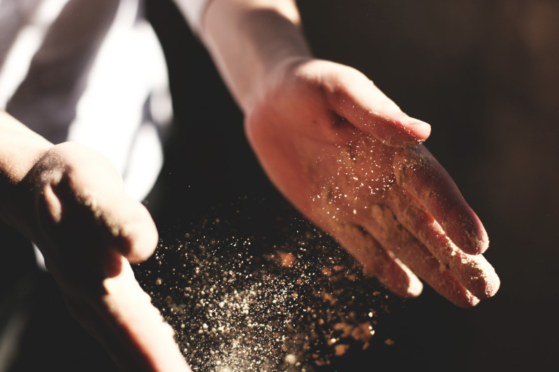

The Science of Sourdough
Sourdough bread is made using a fermented mixture of flour and water, known as a sourdough starter. This starter contains wild yeasts and beneficial bacteria that ferment the sugars in the flour, creating the characteristic tangy taste and airy texture of sourdough bread. The fermentation process also makes sourdough bread more nutritious and easier to digest than bread made with commercial yeast.
How Sourdough is Made
Making sourdough bread involves a few basic steps: creating and maintaining a sourdough starter, mixing the dough, and allowing it to rise through fermentation. To create a starter, flour and water are mixed together and left to sit for several days until wild yeasts and bacteria naturally present in the flour begin to ferment it. Once the starter is active, it can be used to leaven bread. To make the dough, flour and water are mixed with the starter, then left to rise for several hours before being shaped and baked. The fermentation process can take anywhere from several hours to a full day, depending on factors such as temperature and the strength of the starter.
Why Sourdough is Special
Sourdough bread has been made for thousands of years and holds a special place in many cultures. It is valued for its unique taste, texture, and the fact that it does not require commercial yeast. Additionally, some people find it easier to digest than bread made with commercial yeast. Sourdough bread is also considered a healthier option as the fermentation process increases nutrient availability, and also reduces phytates and gluten content. With the rise of gluten-free diets and interest in traditional food preparation methods, sourdough has seen a resurgence in popularity in recent years.